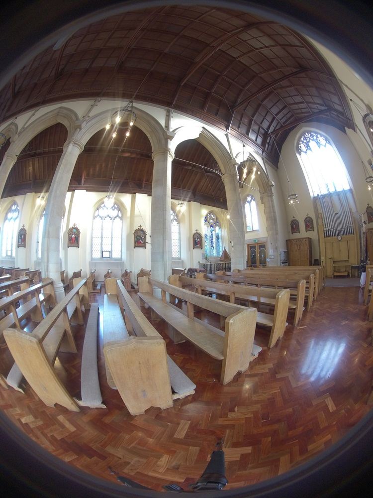
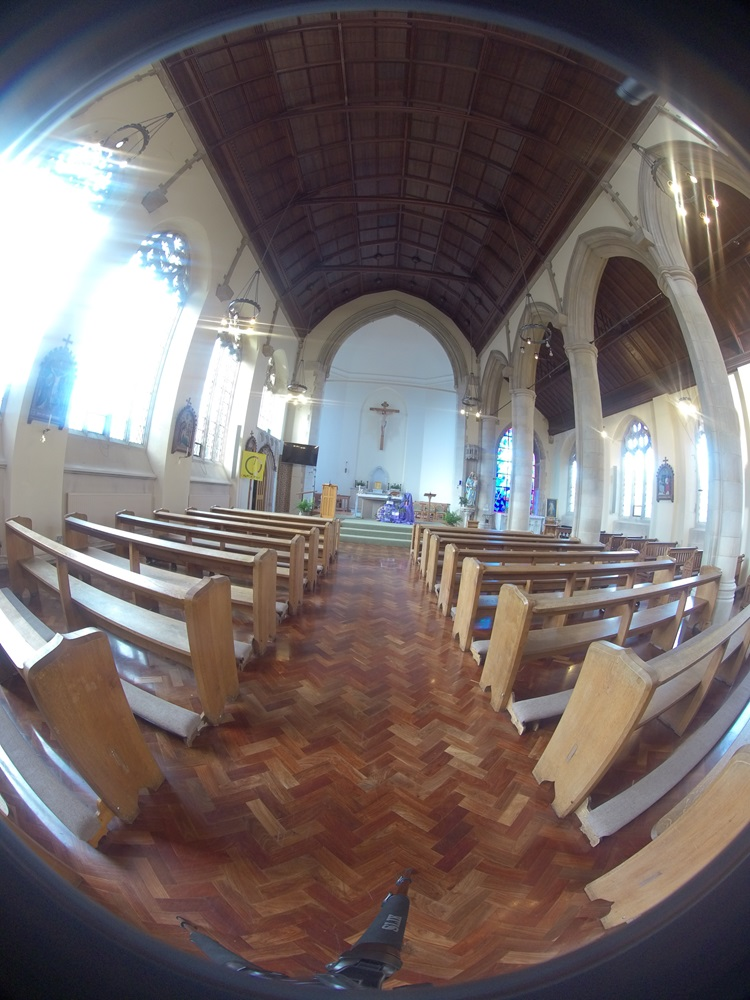
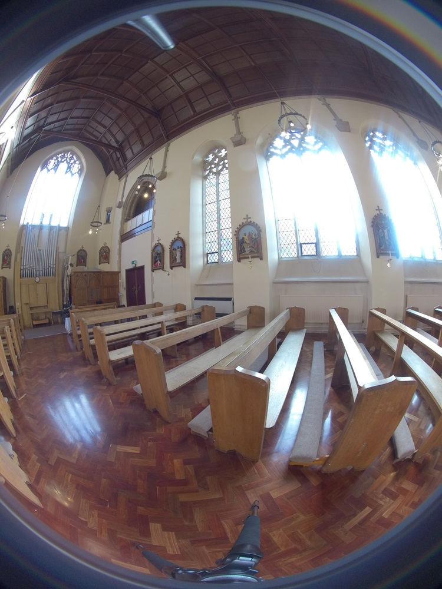

Techniques for Capturing Images
Last updated on 2024-02-04 | Edit this page
Estimated time: 15 minutes
Overview
Questions
What methods are available for capturing spherical panorama images?
How do we setup the shooting scenarios?
Objectives
Explain how different techniques are available for spherical panorama photography
Cover camera setups for spherical panorama photography
Multiple-shot rotating (Pano Kit)
This technique uses a regular DSLR camera, a compact camera or a mobile phone, accompained by rotating mechanism such as the Matterport for DSLR cameras or the Insta360 Flow for mobile phones.
Whichever device you will use, the idea is to take interval timed photographs, covering the whole 360 horizontal and vertical area.
For vertical coverage it would be necessary one of the followings:
a wide angle lens in portrait mode for DSLR cameras
an adapter kit for mobile phones
if you are not using a wide angle lens it will be necessary to shoot 4 more photographs at 90 degrees (or 3 at 60 degrees) tilted to the top and to the bottom of the view
This is a general guideline for shooting with regular cameras. A good rule is to overlap the photos for at least 1/3 of each sequential image. However there are many different lenses for DSLR cameras and it is important to know their characteristics, especially the FOV’s(Field of View) settings.
Here you can find a guideline of choosing the right amount of overlap depending on the field of view of the lenses.
On this page you can find a list of kit parts for shooting with this technique
Multiple wide-angle lenses (spherical panorama camera/360 camera)
This techniques uses a camera with one or more fish-eye lenses such as the Insta360.
- Only one shot is necessary because multiple images of different angles are captured at the same time, covering the whole 360 spherical spectrum overlapping each other.
|  |  |
 |  |
 |  |
Spherical unprocessed photos of St Mary’s Roman Catholic Church Brighton (UK), DSVMC University of Brighton, under DSVMC
The images are then processed with stitching software to produce a spherical single distorted image.
The algorithm used by many cameras such as the insta360 Pro 2 is called dense optical flow

This two techniques differs consistently: while the first needs more time to set-up but the acquisitin is achieved with cheaper equipment, the latter has the advantages to be faster during the setup and acquisition phase but with generally more elevated costs.
Below you can see a brief explanation of the differences in cost, quality and time of using one or the other technique.
What is the difference between a 360 Camera and an Asteroom Virtual Tour Kit?, under Asteroom, via YouTube.